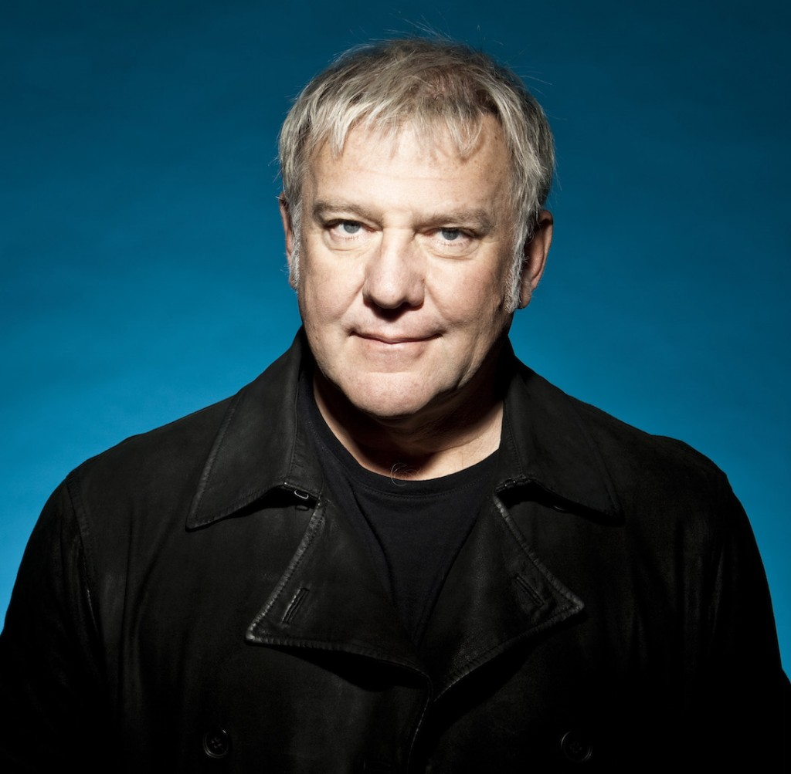

Geddy Lee

Geddy Lee was Rush’s vocalist and bassist, known for his high-pitched voice, complex bass playing, and use of synthesizers. He’s also admired for his work ethic and stage presence.
Beyond music, Geddy is an avid baseball fan and wine connoisseur. His high-register voice became one of Rush's trademarks, and his ability to multitask—playing bass, keyboards, and singing—made him one of rock’s most impressive performers.
Alex Lifeson
Alex Lifeson, the band's guitarist, brought a diverse range of textures and tones to the Rush sound. He was known for his emotional playing style and innovative chord structures.
Alex brought humor and warmth to the band, both on and off the stage. His blend of jazz, classical, and hard rock influences gave Rush a sonic versatility that set them apart. His solos range from subtle melodies to complex riff-heavy journeys.
Neil Peart

Neil Peart was the drummer and primary lyricist for Rush. Widely regarded as one of the best drummers in history, he was also a thoughtful writer whose lyrics shaped the band’s identity.
In addition to his drumming prowess, Neil was a published author and motorcycle enthusiast. His travel memoirs offer insight into his intellectual curiosity and his journey through grief and self-discovery. His passing in 2020 was a profound loss to the music world.